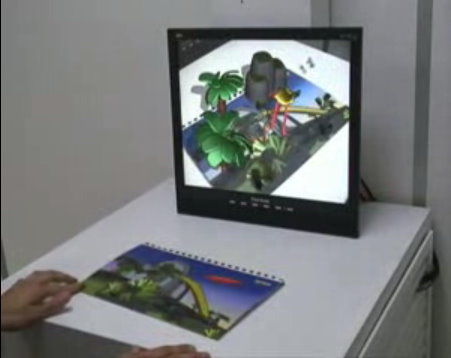

| 組別：G1 |
| 日期：2009/02/16~2009/02/22
|
| 組員：林煥鈞、楊孟宜、王逸賢、莊佳樺、王雅雯 |
| 主題：Taiwan茶文化or民間故事 |
本週老師給予建議 |
||||||||||||||||||||||||||||||||
一、問題定義 a.茶文化有什麼問題? b.茶文化->為何要使用網站推廣? 二、這些網站有什麼問題? a.要有參考文獻(博碩士論文，APA) b.蒐集以茶為主的網站做現況分析-> 提出茶＋網站~需要具備哪些功能?(茶文化發展原則) －－－－－－－－－－－－－－－－－－－－－－－－－－－－－－－－－－－－－ 下周內容 一、前言 [問題定義] 研究背景和動機 [本研究專題...] 二、現況探討 [網站優缺點] 三、網站 [專題網站需要具備哪些功能]
|
||||||||||||||||||||||||||||||||
本週內容Part1-會議紀錄 |
||||||||||||||||||||||||||||||||
1.老爹HW 一、前言 ----> MOMO & KITTY 二、現況探討 ----> 老人 & 王拉拉 三、_____需要具備哪些功能 ----> 雯雯 & 串燒 以上資料請於禮拜日22:00前上傳~ －－－－－－－－－－－－－－－－－－－－－－－－－－－－－ 創影股份有限公司 http://www.media104.com.tw/ 連絡電話：04-22297228 連絡地址：台中市自立街94號 MOMO負責聯絡 －－－－－－－－－－－－－－－－－－－－－－－－－－－－－ 2.Wow! eye Taiwan 決定參加 音樂影片(MV) 下次開會在繼續探討 P.S. 大家可以先找風格~PO在此版~^^ －－－－－－－－－－－－－－－－－－－－－－－－－－－－－ 3.阿里山之旅 ----> 老人 & 王拉拉 負責策畫 老人 says：春假完後會給我們交代~ P.S. 茶之旅時間改至 4/18~4/19 唷~ －－－－－－－－－－－－－－－－－－－－－－－－－－－－－ 4.期中提報檢討 a.觀察其他組~我們少了很多內容~只知道方向還沒有確切的內容 b.跟其他組比較起來~我們有進度落後所以還需要繼續加油~ －－－－－－－－－－－－－－－－－－－－－－－－－－－－－ 5.臨時動議 a.希望在4月底的時候~可以將創意發想與使用媒材這一部分完成 b.下次開會時間於上完老爹的課後 |
||||||||||||||||||||||||||||||||
本週內容Part2-完成進度 |
||||||||||||||||||||||||||||||||
一、前言 臺灣的特殊地理環境與豐富多元的歷史背景，使得國內擁有許多特有的文化與產物，就像是一塊海綿，歷來自發或被動地不斷吸納各種外來文化。茶是我國傳統飲料，更是臺灣重要經濟作物之一，依據林鼎盛(民96年，7月)在「新式台灣茶飲的社會學分析」一文中指出，「全球性文化商品透過全球化企業的運作，挾帶著它們的文化進入現今的臺灣社會，漸漸改變台灣人的飲食習慣；那些商品包含咖啡、紅酒、速食等等，例如星巴克咖啡（Starbucks Coffee）嘗試灌輸消費者的思想：精品咖啡，以『上咖啡館』作為有閒階級的代表，除了咖啡本身，還帶來一種新生活風格型態。然而，當我們的焦點集中在全球性消費文化，往往會忽略了在台灣，茶的飲用是一項極為重要的消費現象。」 臺灣茶之發展，除了具形的經濟產業的實質意義外，在無形的文化教育與提昇整個社會的人文素養與品質，也扮演相當重要的功能性角色。在日常生活中，茶扮演不可或缺的飲品，對我們而言，茶是日常飲料，更是平日休閒時的必需品。台灣茶飲的獨特性在於，台灣茶飲文化是種「混雜」的文化，它是多種風格的混合，茶館的設計中，往往交雜各種不同文化的元素，餐點與茶飲形式也混入各種不同國家的飲食(林鼎盛，民96)。臺灣的茶飲消費如高田公理(1992)《遊戲化社會》中所提，高度經濟發展後，人們不再渴求制度化或教條式生活，他們要求具有附加價值的歡愉，更重視嗅覺、味覺、觸覺的感官；生活上，他們重視文化與藝術，強調藝術與經濟結合，並且讓文化走入民眾生活。飲食上，他們要求意想不到的趣味，在美食上花費更多心思，情調比好吃重要，換言之，現在去餐廳已經不只是好吃，更要吃氣氛、吃服務、吃趣味。臺灣人不在意混入何種異國的風格，對於如此混雜的選項沒有感到任何的不協調，似乎已經習慣這種拼湊。因為飲食習慣的改變，讓臺灣茶飲逐漸地消失其特色。依據邱念渠(民94年，1月)在「台灣茶葉產業的演進過程與發展困境」一文中指出，台灣茶業常久以來模模糊糊的販賣歷史傳統、販賣神話、販賣消費的虛榮以及似有若無的文化傳承，原先的概念已因時間的流逝而顯得老朽斑駁，也造成了年輕消費群對於台灣茶葉的漠視。臺灣茶是我國的特有文化，如何運用創意，提升國人對臺灣茶文化的認識與重視，並活躍於國際間，使臺灣茶有一個不同的未來是值得探討與研究的議題。 現今資訊發達，是個數位化的時代。依據林昇廣(民97年，6月)在「整合三軸加速度計和藍芽應用於桌球虛擬實境遊戲之研究」引用Burdea對虛擬實境的定義，「虛擬實境是一種連接使用者與機器的界面，能讓使用者透過多種感官途徑（sensorial channel）與虛擬環境產生即時的互動」藉由虛擬實境讓使用者與機器產生互動，可滿足使用者在感官上的需求。虛擬實境在未來的使用趨勢，將朝向提供一個具有情境，互動與融入性的操作環境。同時也因資訊科技進步，發達，使得全球資訊網的虛擬實境有揮灑的空間(鄭光成，民89)。本專題研究將運用虛擬實境結合運用推廣台灣茶文化。其目的以互動式虛擬實境電子書結合茶館之研究。在現今茶館當中，鮮有茶館與數位結合。而本專題研究將以互動式虛擬實境電子書來呈現於茶館當中。因此，我們希望藉由製作專題的機會，利用數位與創意的結合，讓臺灣人在喝茶的同時又能兼具體會茶飲帶來的精神與道德氣息，讓臺灣茶文化更進一步的提升與推廣。 文獻參考
二、現況探討 分析對象：坪林茶葉博物館
分析對象：喫茶趣－天仁茗茶
三、需具備哪些功能 A  其他 |
||||||||||||||||||||||||||||||||
創新應用科技 |
||||||||||||||||||||||||||||||||
警察用的頭戴式攝影機Taser Axon、 |
||||||||||||||||||||||||||||||||
本週分工 |
||||||||||||||||||||||||||||||||
二、現況探討 ----> 老人 三、_____需要具備哪些功能 ----> 雯雯 & 串燒 |
||||||||||||||||||||||||||||||||